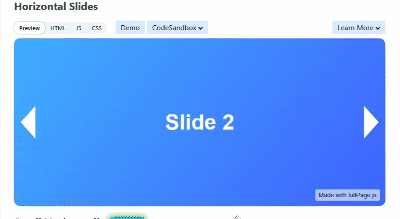
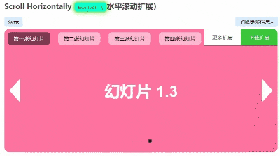
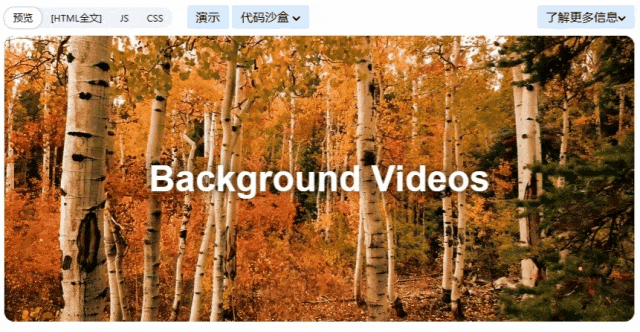
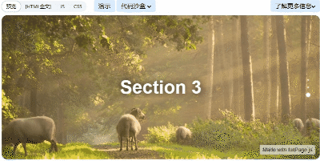

fullPage.js：创建美丽的全屏滚动网站
介绍
fullPage.js 是一个功能强大的 JavaScript 库，能够帮助开发者轻松创建美观且响应式的全屏滚动网站。无论是个人作品集、落地页，还是企业官网，fullPage.js 都能通过其流畅的全屏滚动效果和丰富的自定义选项，为网站带来现代感和互动性。这个库的设计初衷是让开发者在短时间内创建出令人印象深刻的用户体验。
主要特点
- 全屏滚动: fullPage.js 以全屏滚动为核心，通过分屏的方式展示网站内容，用户只需上下滚动即可切换不同的内容区域。每一屏可以独立设计，提供了极大的自由度。
- 响应式设计: fullPage.js 能够自动适配不同的设备和屏幕尺寸，无需额外调整，即可在桌面端、平板和手机端都表现出色。
- 简单易用: 该库易于集成，并且有丰富的文档和示例，即使是新手开发者也能快速上手。只需几行代码就能完成全屏滚动效果的基本配置。
- 多样化的动画效果: fullPage.js 提供了多种内置的滚动动画和过渡效果，开发者还可以根据需求自定义动画，使网站更具个性化。
- 插件支持: fullPage.js 拥有多种插件，如导航、幻灯片、锚链接等，进一步扩展了其功能，满足更多复杂的场景需求。
实用案例




等等,还有很多示例.......
使用场景
- 个人作品集: 对于需要展示个人作品的设计师、摄影师或开发者来说，fullPage.js 是创建互动性强、视觉冲击力大的作品集的理想选择。
- 产品展示页: fullPage.js 非常适合用于产品展示页，通过全屏滚动和精美的动画，能够突出产品的特点和亮点。
- 公司官网: 对于企业官网来说，使用 fullPage.js 能够营造出专业且现代的品牌形象，尤其适合科技类和创意类公司。
- 活动宣传页面: fullPage.js 可以用来制作活动的宣传页面，通过多屏内容展示活动详情和亮点，吸引用户参与。
总结
fullPage.js 是一个功能强大且易于使用的全屏滚动网站库，能够为各种类型的网站提供流畅且富有表现力的用户体验。无论是初学者还是经验丰富的开发者，都能通过 fullPage.js 快速构建出令人印象深刻的全屏滚动网站。结合其丰富的功能和灵活的配置选项，fullPage.js 无疑是创建现代网页设计的不二选择。如果你想为你的网站增添一份独特的视觉效果，fullPage.js 是一个值得推荐的工具。